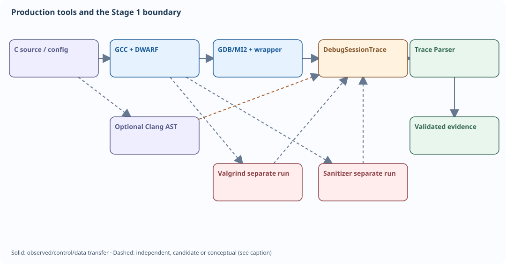
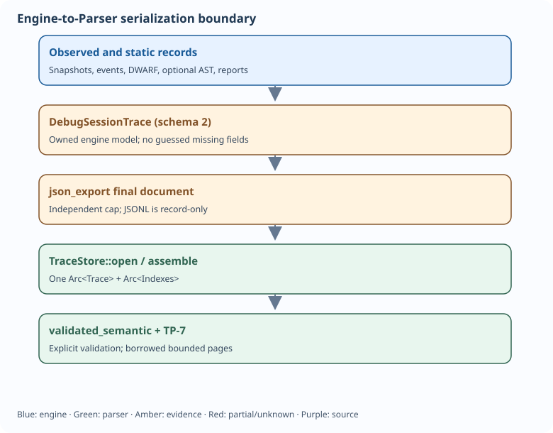

4 · Complete Stage 1 pipeline #
The key distinction throughout: what the program did in the main debugger run versus what another tool found in a separate run.
The system boundary #


Part A · Recording (Trace Engine) #
Step 1 — Build a program we can inspect #
| Piece | What it does |
|---|---|
| GCC | Builds a debug executable: a program with extra info so GDB can link machine instructions to source lines, types and variables. |
| DWARF | That extra info. It describes the compiled program, not a history of what happened when it ran. |
| Allocation logger | Built in with --wrap, a linker option that redirects calls (see below). |
| Sanitizer build | GCC attempts a second executable with sanitizer checks. It may fail or be skipped without erasing the debug run's observations. |
| Clang AST (optional) | A structured outline of written expressions. An entry for malloc(40) is a clue about the source, not evidence the call happened. |
How --wrap works. The linker option --wrap=malloc redirects calls so they pass through the project's own function first:
your code calls: malloc(40)
│
▼
__wrap_malloc(40) ← the project's wrapper: writes a log entry
│ ("this run allocated 40 bytes")
▼
__real_malloc(40) ← the real allocator, reached through the linkercalloc, realloc and free are wrapped the same way, and your C source doesn't change. The limit: only calls it intercepts are recorded. Allocations made entirely inside unwrapped libraries aren't promised.
Step 2 — Observe the primary run #
| Piece | What it does |
|---|---|
| GDB | Runs the debug executable. |
| MI2 | GDB's machine-readable language: "continue," "stop," "show me this variable." |
| Inferior | The program being debugged. The engine observes its followed inferior, not every process created by fork. |
| Stop | A pause where variables and memory can be read. New wrapper log lines are read at every stop. |
| PID + sequence number | Each log line says which process wrote it and its order within that process. |
The wrapper log is a separate file so allocator messages can't be confused with the program's normal output. And a child process or instruction that was never observed doesn't become a fact just because a later stop was captured.
Step 3 — Keep separate runs separate #
| Run | Executable | Status |
|---|---|---|
| Run 1 · primary | Debug executable under GDB | Own status |
| Run 2 · sanitizer (if enabled) | Separate sanitizer executable | Own status |
| Run 3 · Valgrind (if enabled) | Another execution | Own status |
Statuses are completed, failed or skipped. Runs 2 and 3 can report useful errors such as "40 bytes leaked near line 52." They can't reliably say "that was allocation 17 in Run 1," since a new run may use different addresses or allocate in a different order. Only Run 1's wrapper events supply Run 1's allocation IDs.
Reading the diagram's arrows #
| Arrow | Meaning |
|---|---|
| Solid | A tool produces an artifact or passes actual runtime data. |
| Dashed | Optional, independent or only a possible match. It does not mean Clang or Valgrind observed the GDB execution. |
See Trace Engine architecture for control flow and evidence contracts for what each tool can prove.
Part B · Handoff and reading #


| Stage | What happens | What it does not do |
|---|---|---|
| Package | Observations gather into a DebugSessionTrace (defined in src/models.rs). | — |
| Export | src/json_export.rs writes it as JSON. | — |
| Journal (during recording) | JSONL writes records one per line and can preserve a partial run. | It is not a full replacement for the final JSON; it lacks some final reports and reconstructed state. |
| Load | TraceStore::open keeps one canonical shared copy and builds small lookup tables. | A successful load says the schema is supported. It does not prove records agree with each other. |
| Validate | Call validated_semantic() before relying on relationships such as "this realloc came from that earlier allocation." | The parser never restarts GDB or changes history. |
Where to continue #
- Inside the recording: engine architecture
- How loading avoids copying per query: parser ownership
- Individual implementations: source file index
- New to
PID, allocation ID, checkpoint orEvidenceRef? Keep the glossary open alongside.